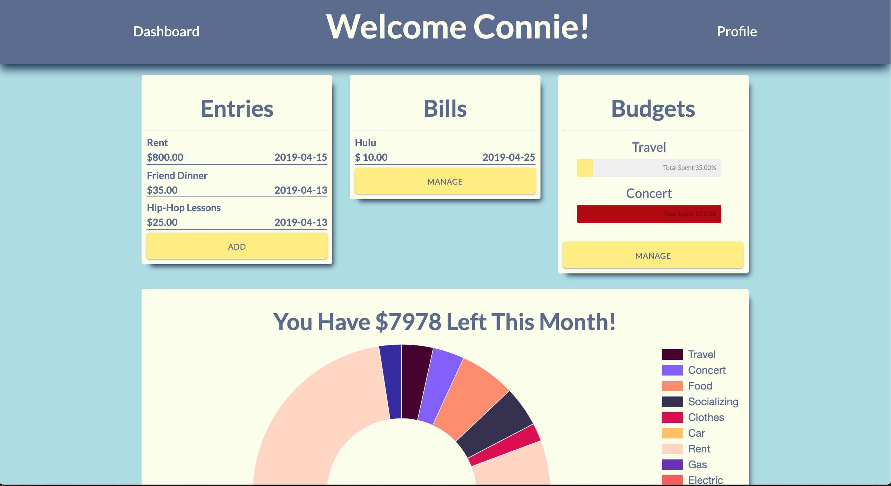

Portfolio


Check Yourself
Check Yourself is a web app that allows users to log and manage their spending habits. Users will be able to set custom categories, see upcoming bills, and set warning triggers to be notified when spending approaches their limit. Test credentials included in Github Readme.
Tech Used: MySQL, Express.js, Handlebars, Node.js